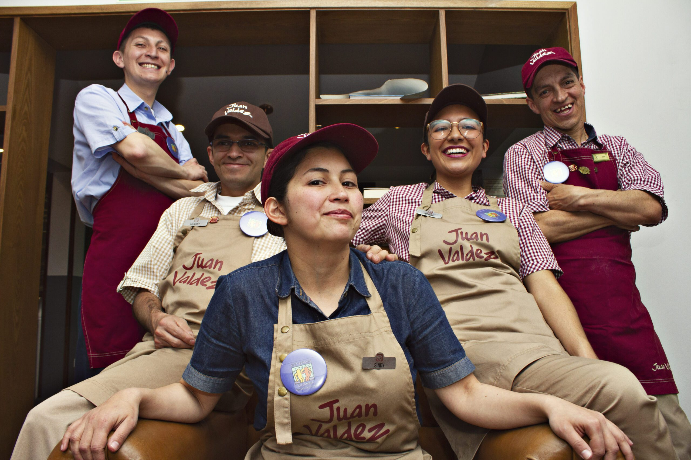
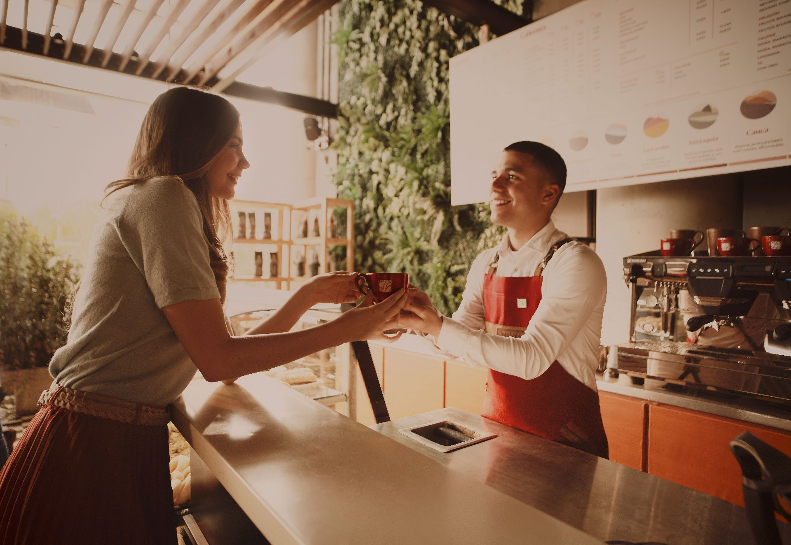

¿Porque trabajar con nosotros?
Somos el café premium 100% Colombiano


Somos marca país y trabajamos para las las de 540.000 familias caficultoras


Dentro del marco de la reinvención y con el objetivo de seguir trabajando por más de 540.000 familias
caficultoras, se lanza en octubre del 2019 la nueva estrategia corporativa.
En Juan Valdez, todos somos líderes: somos los responsables de nuestro crecimiento, del desarrollo de
nuestro equipo y de todos nuestros grupos de interés. Por ello, fomentamos y potencializamos a nuestros
colaboradores por medio de 5 características que nos generan orgullo y nos impulsan cada día a seguir
trabajando por nuestro propósito “Cautivar al mundo con los cafés premium de Colombia,
generando valor a los
caficultores colombianos”.
Si te sientes orgullosamente colombiano, crees y vives los valores de nuestra cultura, siempre estás dispuesto a crear momentos memorables a través de la experiencia del café y te sientes convencido de nuestro propósito, puedes enviarnos tu hoja de vida para las vacantes de canales comerciales o cargos administrativos. Contamos con tres plataformas a través de las que nos puedes enviar tu hoja de vida